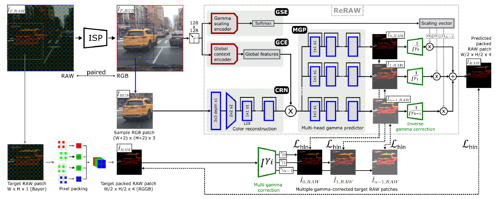
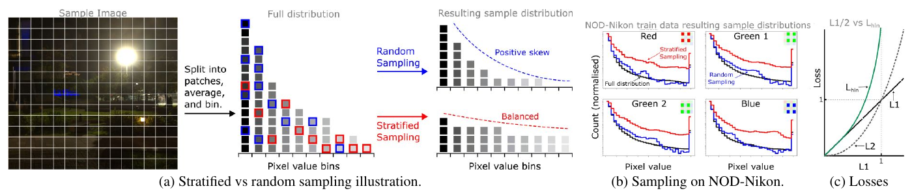
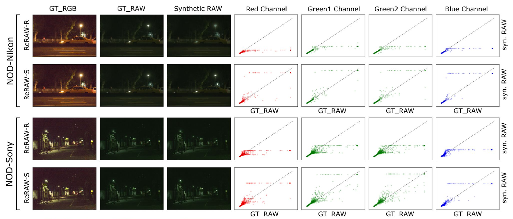
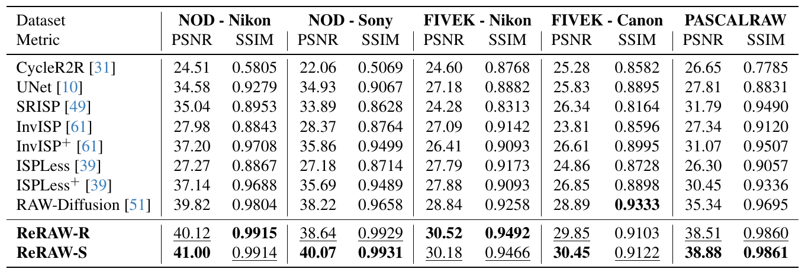
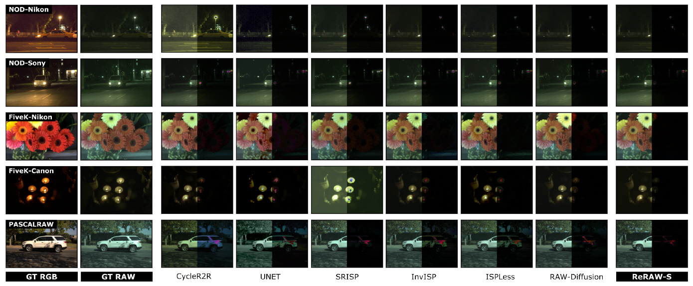
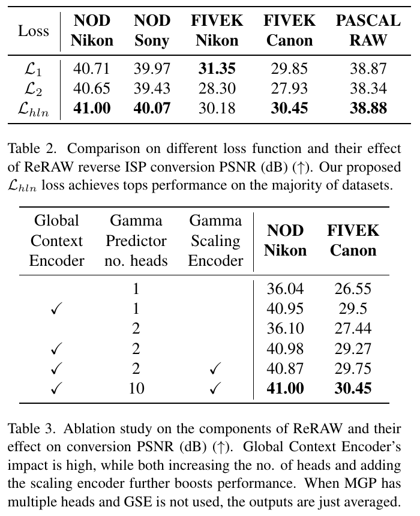
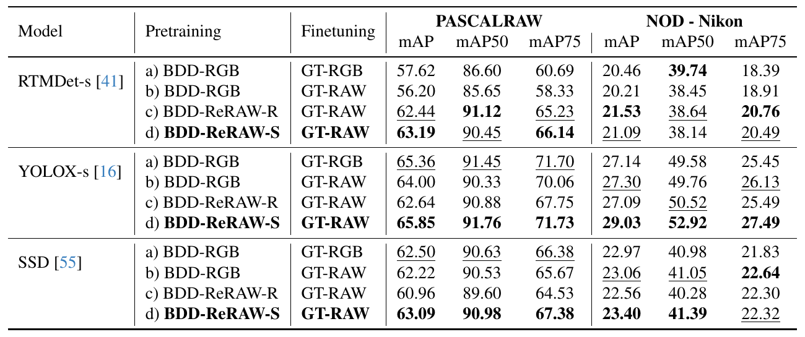
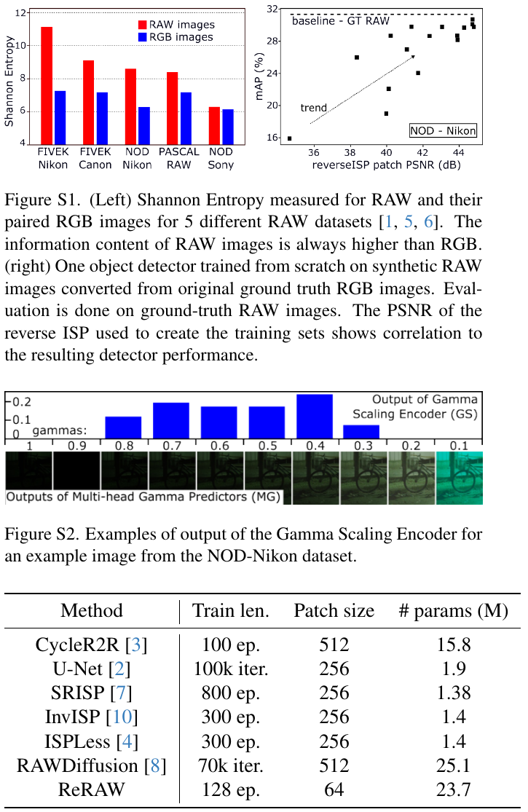

论文
ReRAW：感受野只有 4×4 的逐像素颜色网络，加两个看整图的 ResNet18，10 个 gamma 头混合出 RAW，训练块按亮度分层采样

代码来源说明：arXiv v1 里的代码链接是匿名的 4open.science 地址，CVF 正式版改为官方仓库 SonyResearch/ReRAW（MIT 许可，2026-10-29 查看时 38 星）。本页行号对应 HEAD
e2b7ba2（2025-09-24），repo/即这份克隆。仓库只有约 1000 行：分层采样、训练、整图转换三个脚本和一份示例配置。没有预训练权重、没有 release，没有生成 RGB 的渲染脚本，没有整图 PSNR/SSIM 评测脚本，也没有检测实验的代码。论文正文以 CVF 正式版为准（补充材料的图表编号也来自 CVF 版），与 arXiv v1 的差别只在措辞和一处块尺寸（§4 第 4 条）。
专项定位：本页属于「手机照片 → 相机画质：细节与质感迁移」专项（入口：phone2camera-2026 调研页）。专项已经读过四种「sRGB → RAW」：unprocessing-2018 手写逆 ISP 加物理噪声，raw-diffusion-2024 像素空间条件扩散（与本文同一团队），raw-flow-2026 潜空间确定性流匹配（它的表 1 把本文的 ReRAW-S 当最强回归基线），rawgen-2026 用 FLUX.1-Kontext 出 XYZ 再经 DNG 矩阵落到相机。三篇学习式方法的共同结论是「输出接近条件均值的干净 RAW，纹理来自输入照片，只能当颜色/色调逆 ISP」。本页要回答：一个刻意做得很局部、很便宜的回归网络，这个结论变没变，它适不适合大规模造数据。
逐像素
颜色重建网络的感受野是 4×4 个 RGB 像素，正好覆盖一个 2×2 Bayer 单元加一圈邻居。之后全是 1×1 卷积，所以整个模型是「4×4 邻域 + 整图摘要」的逐像素函数（§2.2）。
整图摘要
两个从零训练的 ResNet18 看 128×128 的整图缩略图：一个给 128 维向量乘到每个像素的特征上，一个给 10 个 gamma 头的混合权重。消融里全局上下文贡献 +2.9–4.9 dB，是最大的一项（§2.3、§3.4）。
分层采样
每张图只取 6 个训练块，按 RGB 块均值亮度分档、先均匀抽档再抽块，让亮块多进训练集。效果集中在夜景的截断高光：被截断的像素猜一个更高的值（§2.6）。
给本专项的结论
确定性、无噪声、每台相机单训。4×4 感受野从结构上保证不改纹理，但也逆不了局部色调映射和锐化。适合当颜色/色调逆 ISP 和便宜的检测预训练数据转换器（§6）。
1. 出发点：边缘端检测想直接吃 RAW，但没有带标注的大规模 RAW
论文的场景是「传感器旁边的小芯片上跑检测」。RAW 比 ISP 处理后的 RGB 保留更多信息（补充 Fig. S1 左：五个数据集上 RAW 的平均香农熵都高于配对 RGB），跳过 ISP 也省电省时。但 RGB 预训练的检测器直接用到 RAW 上有域差，而带检测标注、规模超过 10 万张的 RAW 数据集，作者认为并不存在（§2.1）。
已有两条路：给检测器加可学习的适配器或非线性缩放，把 RAW 拉回 RGB 的样子；或者训练一个逆 ISP，把现成的大规模 RGB 标注集转成 RAW。作者选后一条，并指出已有逆 ISP 的共同短板是还原不准真实颜色，尤其是暗场景里的亮部（§1）。
ReRAW 的设计目标因此有三条：不读 RAW 元数据、只看 RGB 就能输出某台相机的 RAW；白天、夜景都要能处理；夜景里的高光（路灯、车灯）要还原好。论文的三项贡献对应这三条：多头 gamma 预测、分层采样（外加 hard-log 损失），以及「合成 RAW 预训练 + 真实 RAW 微调」的检测训练配方。
RGB-to-RAW / 逆 ISP
从 ISP 输出的 8-bit RGB 推回传感器的线性 RAW。本文每台相机训一个模型。
打包 RGGB
把 Bayer 马赛克每个 2×2 单元拆成 R、G₁、G₂、B 四个通道，长宽各减半。本文的 RAW 输出就是这种 W/2×H/2×4 的图。
gamma 空间
对线性值取 xγ（γ < 1）。γ 越小，暗部被拉得越开。在 gamma 空间里预测，误差会更多落在亮部，暗部更精确。
全局上下文
把整张图缩成 128×128 的缩略图，抽一个向量，代表这张图的整体亮度、白平衡、色彩倾向。切块处理时，单个块看不到这些信息。
分层采样 (stratified sampling)
先把样本按某个量分档，再在档之间均匀抽，而不是在全体里均匀抽。本文按块的平均亮度分 10 档，让亮块和暗块被抽到的机会接近。
hard-log 损失
−ln(1 − |误差| + ε)。误差小时约等于 L1，误差接近 1 时急剧变大，专门惩罚大错，比如高光估错。
rawpy 渲染
用 LibRaw 的 Python 封装把 RAW 转成 RGB。本文的训练 RGB 全部这样从同一张 RAW 渲出来，不是相机机内 JPEG。渲染参数论文没写。
ReRAW-R / ReRAW-S
同一个网络，训练块分别用随机采样（R）和分层采样（S）选出。
mAP / mAP50 / mAP75
检测的平均精度。mAP 是 IoU 阈值 0.5–0.95 的平均，mAP50、mAP75 分别只在 IoU 0.5、0.75 下算。
2. 方法：一个局部的颜色网络 + 两个看整图的 ResNet18
2.1 数据：rawpy 从同一张 RAW 渲出 RGB，每张图只取 6 个块
论文对数据的描述只有两句：所有 RAW 数据集都用 rawpy 转成全分辨率 RGB，组成 RAW-RGB 对；按 80/20 划分训练和测试（§4.1）。仓库里没有渲染脚本，用户需要自己准备 rgb/ 和 raw/ 两个文件夹（README §1），所以 rawpy 用的是什么参数无从核对。同一团队的 raw-diffusion-2024 用的是 rawpy 默认参数（日光白平衡、自动提亮、无降噪、无锐化），如果本文也一样，训练和测试 RGB 都是同一条简单、全局的 ISP 产物。
训练数据不是整张图，而是每张图抽 6 个块（每个颜色通道抽 2 个，repo/config/cfg_example.py:L19），每个块存三样东西：66×66 的 RGB 块（64×64 再各加一圈 1 像素邻居）、对应的 32×32×4 打包 RAW 块、以及一张 128×128 的上下文缩略图。目标 RAW 减黑电平、截到 0 以上、除以白电平常数，再算出 10 个 gamma 目标：
repo/resources/dataset.py:L45-L61 — 目标 RAW 减黑电平后截断、除以 rggb_max；10 个 gamma 目标在这里一次算好，按 gammas 列表顺序拼成 40 通道
with open(os.path.join(self.target_path, file_name), "rb") as f:
target = np.load(f, allow_pickle=True)
target = (
np.clip(np.array(target, dtype=np.float32) - self.dataset["black_level"], 0, None)
/ self.dataset["rggb_max"]
)
sample = self.transform(sample)
context = self.transform(context)
target = self.transform(target)
targets = []
for gamma in self.gammas:
targets.append(torch.pow(target, gamma))
targets = torch.cat(targets, dim=0)
两点值得记住。一是每张图只用 6 个 64×64 块：一张 1200 万像素的图只有约 0.2% 的像素进了训练集。FiveK-Nikon 的 542 张按 80% 训练，总共只有约 2,600 个块；NOD、PASCALRAW 约 1.8–2.0 万个块。这让「挑哪 6 个块」变成一个有分量的决定，也就是 §2.6 分层采样的出发点。二是黑电平以下的值被 np.clip(..., 0, None) 截掉，这和 RAW-Diffusion 的做法一样，读出噪声的负半边在目标里不存在。训练时没有任何翻转、旋转增强（L52-L54 只有 ToTensor），Bayer 相位不会被打乱，这一点比 RAW-Diffusion 和 RAW-Flow 都干净。
2.2 颜色重建网络：每个 RAW 像素只看 4×4 个 RGB 像素
论文 §3.2 写得很清楚：CRN 先是一层 3×3、3 组、96 通道的深度卷积（不补零），再是一层 2×2 步长 2 的卷积到 128 通道，之后是 8 层 128 通道的 1×1 卷积；「每个空间位置的感受野只有原 RGB 块里的 4×4」。代码完全对得上：
repo/resources/models.py:L89-L110 — CRN 仅有的两层带空间范围的卷积：3×3（padding=0，groups=3，3→96）和 2×2 stride 2（96→128）；之后的层全是 kernel_size=1
self.layers = nn.ModuleList()
self.layers.append(
nn.Sequential(
nn.Conv2d(
in_size,
initial_size * in_size,
kernel_size=3,
stride=1,
padding=0,
bias=bias,
padding_mode="reflect",
groups=3,
),
act(val),
)
)
self.layers.append(
nn.Sequential(
nn.Conv2d(initial_size * in_size, hidden_size, kernel_size=2, stride=2, bias=bias),
act(val),
)
)
把后面的全局向量、10 个头、α 混合都算进来，整个模型可以写成一行：
—— 翻译: 输出 RAW 第 (u,v) 个 2×2 单元的四个值，只由 RGB 图上以它为中心的 4×4 小窗（c 是 CRN）和整张图的缩略图 ÎF 决定；z 是全局向量，hi 是第 i 个 1×1 头，αi 是按整图给出的混合权重。
这一行解释了 ReRAW 的几乎所有性质：
- 它是一组按图像切换的逐像素颜色曲线。 同一张图里，两个 4×4 邻域长得一样的位置，输出一定一样。它能学逆 gamma、逆色彩矩阵、逆白平衡、逆全局色调曲线，以及 2×2 范围内的逆去马赛克，学不了任何需要更大邻域的东西。
- 纹理完全来自输入照片，而且是结构上保证的。 RAW-Diffusion 和 RAW-Flow 的「纹理来自输入」是从行为和跳连推出来的；ReRAW 连推都不用推，它没有能力生成或抹掉 4×4 以外的结构。输入里的噪声、压缩块、锐化光晕都会逐像素地被映射到 RAW 空间。
- 它逆不了局部处理。 局部色调映射、多帧降噪、半径超过一两个像素的锐化，都依赖大邻域。ReRAW 只能用整图缩略图给出的 128 维向量去近似，学到的是这张图的「平均曲线」。
- 切块推理天然没有拼缝。 每个块带一圈 1 像素邻居送进去，输出和整图卷积完全一样（§2.7）。
2.3 全局上下文编码器：一个 128 维向量逐通道乘到每个像素上
GCE 是一个去掉分类层、换成 512→128 线性层的 ResNet18，输入是整图缩到 128×128（§3.2）。代码里它是从零训练的（pretrained=False，repo/resources/models.py:L143），输出不过激活函数，直接广播到 32×32 后与 CRN 特征逐元素相乘：
repo/resources/models.py:L47-L71 — ReRAW.forward：全局向量乘到 CRN 特征上（Eq. 1），GSE 出 softmax 权重（Eq. 2），10 个头的输出截到 ≥0、反 gamma、加权求和（Eq. 3）
def forward(self, x, global_img):
b, c, h, w = global_img.size()
global_features = self.global_context_encoder(global_img)
global_features = global_features.view(b, self.hidden_size, 1, 1)
global_features = global_features.repeat(1, 1, self.target_size[0], self.target_size[1])
x = self.color_reconstruction(x)
x = x * global_features
scaling = self.gamma_scaling_encoder(global_img)
scaling = self.softmax(scaling)
y = 0
outputs = []
for head_no, head in enumerate(self.heads):
scale = scaling[:, head_no : head_no + 1].view(b, 1, 1, 1).repeat(1, 4, 1, 1)
y0 = torch.clip(head(x), 0, None)
y += torch.pow(y0, 1 / self.gammas[head_no]) * scale
outputs.append(y0)
outputs = torch.cat(outputs, dim=1)
return y, outputs, scaling
对应论文 Eq. 1：
—— 翻译: 先用 C 把 RGB 块变成逐像素特征，用 F 把整图变成一个向量，两者逐通道相乘（相当于按整图给每个通道一个缩放系数），再交给 10 个头 M 各出一张候选 RAW。
乘法相当于只有缩放、没有偏移的 FiLM。补充 Table S1 比了三种接法：NOD-Nikon 上乘法 41.00、加法 40.91、拼接 40.76，FiveK-Canon 上 30.45 / 30.26 / 30.12，差距在 0.1–0.3 dB。真正大的是「有没有」：Table 3 里去掉 GCE，单头模型在 NOD-Nikon 上从 40.95 掉到 36.04（−4.9 dB），FiveK-Canon 从 29.5 掉到 26.55（−2.95 dB）。
为什么整图摘要这么重要？一个合理的解释是：如果训练 RGB 是 rawpy 默认渲染，自动提亮的系数按整张图的直方图定，同样一个 RGB 值在亮图和暗图里对应的 RAW 值可以差很多倍，单看一个 64×64 块推不出这个系数（推断，论文没写渲染参数）。raw-flow-2026 的表 4 得到了同方向的结论：整图缩略图当条件比与块对齐的局部条件高 2.3–4.2 dB。两篇独立工作都发现，切块的逆 ISP 最缺的是整图信息，不是更大的局部感受野。
2.4 多头 gamma 预测：10 个 1×1 头各在一个 gamma 空间里预测，按整图混合
MGP 有 n = 10 个并行头，每个头由 8 层 128 通道的 1×1 卷积组成，输出 4 通道（代码里是 1 层输入 + 6 层残差 + 1 层输出，repo/resources/models.py:L157-L207）。第 i 个头的训练目标是 γi 次幂的 RAW，γi ∈ {0.1, 0.2, …, 1}（配置里按 1, 0.9, …, 0.1 排列，repo/config/cfg_example.py:L40）。GSE 是第二个 ResNet18，输出 10 维、过 softmax：
—— 翻译: 第 i 个头去拟合「RAW 的 γi 次方」；GSE 看整图给 10 个头打分并归一化；最终输出是每个头的结果开 γi 次方还原回线性后，按分数加权平均。
为什么要在 gamma 空间里预测？看一个数值例子。设目标线性值分别是 0.01（夜景暗部）和 0.8（高光），网络在 gamma 空间里都多估了 0.01，还原回线性后的误差是：
| 头 | 暗部 0.01 的线性误差 | 高光 0.8 的线性误差 |
|---|---|---|
| γ = 1（线性） | 0.0100 | 0.0100 |
| γ = 0.4 | 0.0017 | 0.0220 |
| γ = 0.1 | 0.0017 | 0.0857 |
低 γ 头在暗部精确 6 倍，在高光处粗糙 2–9 倍；γ = 1 头反过来。每个头各自在自己的空间里受监督（§2.5），等于强迫低 γ 头把暗部学准、高 γ 头把亮部学准；最终输出在线性空间受监督，决定怎么混。论文给的动机是：白天数据 ISP 改动小，夜景数据 ISP 改动大（提亮多），不同分布适合不同的 gamma 通路（§3.2）。
但要注意两件事。第一，α 是整图一个，不是逐像素的。同一张夜景里，路灯和暗部只能用同一组混合权重，不能让暗像素走 γ = 0.1、亮像素走 γ = 1。补充 Fig. S2 给了一张 NOD-Nikon 图的 α：权重集中在 γ = 0.8–0.3，γ = 1、0.9、0.2、0.1 四个头几乎为 0。第二，消融里这套机制在夜景上几乎没贡献：有 GCE 时单头 40.95、双头 40.98、双头 + GSE 40.87、十头 + GSE 41.00（NOD-Nikon），全在 ±0.1 dB 内；FiveK-Canon 上是 29.5 → 30.45，多了 0.95 dB。而 10 个头比 1 个头多出约 1.04M 参数，消融没有控制参数量，分不清收益来自「gamma 空间」还是「更大的头」。
2.5 损失：hard-log，代码里中间头的权重是论文的 1/10
—— 翻译: 每个像素的惩罚是 −ln(1 − 误差)，误差小时约等于误差本身（像 L1），误差越接近 1 惩罚涨得越快；总损失是「最终输出的损失」加上「10 个头各自在 gamma 空间里的损失」之和。
把 −ln(1−e) 展开就是 e + e²/2 + e³/3 + …，斜率是 1/(1−e)：误差 0.1 时 1.11（几乎就是 L1），0.5 时 2，0.9 时 10。RAW 归一化到 [0, 1] 后，能出现 0.5 以上误差的地方基本只有高光和截断区，所以这个损失实际上是在给高光估错加权（Fig. 3c）。
repo/resources/models.py:L219-L225 — hard_log_loss：误差先截到 [0, 1]，ε = 1e-6，对所有元素取均值
class hard_log_loss(nn.Module):
def __init__(self):
super().__init__()
def forward(self, x, y):
loss = (-1 * torch.log(1 - torch.clamp(torch.abs(x - y),0,1) + 1e-6)).mean()
return loss
训练循环里 loss1 = criterion1(outputs, targets)、loss2 = criterion2(y, target)、loss = loss1 + loss2（repo/train.py:L65-L67）。outputs 是 10 个头拼成的 40 通道，.mean() 对 40 个通道一起取平均，所以
—— 翻译: 代码里 10 个中间头的损失是取平均而不是求和，中间监督的总权重只有论文 Eq. 6 的十分之一，最终输出的线性损失占了主导。
Table 2 比了三种损失（都用分层采样训练）：hard-log 在四个数据集上最好，但 FiveK-Nikon 上 L1 是 31.35、hard-log 是 30.18，L1 高 1.17 dB。这个 31.35 比 Table 1 里 ReRAW 两个变体的 FiveK-Nikon 成绩（30.52 / 30.18）都高，论文正文却写「对数损失在各数据集上都最好」。
2.6 分层采样：按块的 RGB 均值亮度分 10 档，先抽档再抽块

论文 §3.4 的三步：(1) 把每张 RGB 图切块，算每块每个通道的平均亮度；(2) 按亮度分进 10 档 [0, 0.1), …, [0.9, 1.0)，每个通道得到一组分档；(3) 均匀选一档，再在档内均匀选一块，取出对应的 RAW 块。对每张图、每个通道重复若干次。代码分两段，先是算亮度：
repo/stratified_sampling.py:L36-L53 — 每个网格位置 (i, j) 的亮度：以 (64+64i, 64+64j) 为中心、64×64 窗口的通道均值 / 256；最外一圈格子不计算，保持 0
bright = np.zeros((count_h, count_w, 3))
for i in range(1, count_h - 1):
for j in range(1, count_w - 1):
y = cfg_sample["sample_size"][0] + i * cfg_sample["delta"]
x = cfg_sample["sample_size"][1] + j * cfg_sample["delta"]
for c in range(3):
brightness = (
np.mean(
rgb_img[
y - cfg_sample["sample_size"][0]//2 : y + cfg_sample["sample_size"][0]//2,
x - cfg_sample["sample_size"][1]//2 : x + cfg_sample["sample_size"][1]//2,
c,
]
)
/ 256
)
bright[i, j, c] = brightness
然后是分档、抽样和取块：
repo/stratified_sampling.py:L54-L89 — 分档只用 digitize 序号 1–9；随机选档用 randint(10)；选到空档或第 10 档时进 except，退回随机位置；取块的左上角是 (64i, 64j)
bins = np.linspace(0, 1, cfg_sample["n_bins"]+1)
counter = 0
for c in range(3):
idx = np.digitize(bright[:, :, c], bins)
locations = [np.where(idx == i) for i in range(1, cfg_sample["n_bins"])]
# ###############
prob = [int(len(loc)) > 0 for loc in locations]
prob = [p / np.sum(prob) for p in prob]
sampled_indexes = [x for x in range(len(prob))]
# ###############
for i in range(n_samples):
if cfg_sample["type"] == "random":
y = np.random.randint(1, count_h - 1)
x = np.random.randint(1, count_w - 1)
else:
try:
sampled_index = np.random.randint(cfg_sample['n_bins'])
sampled_location = np.random.randint(len(locations[sampled_index][0]))
y = locations[sampled_index][0][sampled_location]
x = locations[sampled_index][1][sampled_location]
except:
y = np.random.randint(1, count_h - 1)
x = np.random.randint(1, count_w - 1)
y1 = np.clip(y * cfg_sample["delta"], 2, None)
y2 = np.clip(y1 + cfg_sample["sample_size"][0], None, img_h - 2)
x1 = np.clip(x * cfg_sample["delta"], 2, None)
x2 = np.clip(x1 + cfg_sample["sample_size"][1], None, img_w - 2)
selected_patch_rgb = rgb_img[y1 - 1 : y2 + 1, x1 - 1 : x2 + 1]
selected_patch_rggb = np.asarray(rggb_img[y1 // 2 : y2 // 2, x1 // 2 : x2 // 2])
对照论文，代码有四处出入（本页用 numpy 逐条复核过）：
- 分档的窗口和存下来的块错开了半个块。 格子 i 的亮度窗口是第 32+64i 到 96+64i 行，存下来的块是第 64i 到 64i+64 行，两者只重叠 32 行、32 列，也就是 1/4 面积。分档依据的是右下方邻近的一块，不是训练块本身。
- 最亮的一档永远抽不到。
np.digitize对 [0.9, 1) 返回 10，locations只收了 1–9；而randint(10)会抽出 0–9，抽到 9 时locations[9]越界，进except退回随机位置。 - 空档也退回随机。 抽到的档如果为空，
randint(0)报错，同样进except。中间那段prob本想只在非空档里抽，但它从没被用到；而且len(loc)是np.where返回的元组长度，恒为 2。 - 最外一圈格子的亮度是 0，被算进最暗的一档，抽中时取到的是图像边缘的块，亮度未必低。
所以实际的抽样概率是：
—— 翻译: 𝓑 是这张图这个通道里非空的档（只算前 9 档）；每个非空档被抽中的概率固定是 1/10，剩下的概率全部退回「在整张图里随机选一个位置」。
一张夜景如果只有前 3 档有块，70% 的抽样其实是随机抽；白天亮图的 9 档都非空时，也有 10% 是随机抽。和纯随机比，它依然把亮块的比例抬高了（Fig. 3b 就是证据），只是没有论文描述的那么「均匀」。
它为什么能改善亮部。 补充 Fig. S4 把每个像素的「真值 RAW vs 合成 RAW」画成散点，最能说明机制：

把这张图和 §2.2 的结构放在一起看：对一个截断的 RGB 像素，ReRAW 在给定整图上下文下只能输出一个固定值，损失（接近 L1）会把它推向训练集里「截断 RGB 像素对应 RAW 值」的中位数附近。随机采样时这类像素很少，而且多来自亮区边缘，于是这个值偏低；分层采样让更多亮块、更多灯芯进入训练集，这个值被抬到接近饱和（推断，论文只给了现象）。线性空间的 PSNR 对亮部大误差最敏感，夜景里灯芯估低 0.8 的误差比暗部所有小误差加起来都大，所以 NOD 两个数据集上 ReRAW-S 比 ReRAW-R 高 0.88 / 1.43 dB。
这也说明「改善亮部」的准确含义：截断高光里丢掉的信息并没有被恢复，只是换了一个更好的猜测。Fig. S4 里 ReRAW-S 的水平线横跨真值 0.2–1.0，灯芯附近估对了，光晕边缘反而估高了。对夜景和 PSNR，这个交换划算；对其他目标未必。
2.7 推理：切块拼接没有拼缝，但两个 ResNet18 每块都重算一次
repo/resources/utils.py:L33-L57 — convert_image：整图缩成 128² 上下文；四周反射补 1 像素后按 64 步长切 66×66 块；每个块都附上一份同样的上下文
context = cv2.resize(img_rgb, context_size, interpolation=cv2.INTER_AREA)
r, c = 0, 0
indexes = []
samples = []
global_imgs = []
# image needs to be extended by 1 pixel since the reverseISP model takes in a 66x66 patch and outpus a 32x32 patch
img_rgb_extended = cv2.copyMakeBorder(img_rgb, 1, 1, 1, 1, cv2.BORDER_REFLECT)
# the model is convolved over the image
while r < img_rgb_h:
c = 0
while c < img_rgb_w:
if c + sample_size[1] > img_rgb_w:
c = img_rgb_w - sample_size[1]
if r + sample_size[0] > img_rgb_h:
r = img_rgb_h - sample_size[0]
# take a 66x66 patch
sample = img_rgb_extended[r : r + sample_size[0] + 2, c : c + sample_size[1] + 2]
samples.append(sample)
global_imgs.append(context)
indexes.append([r // 2, c // 2])
因为感受野只有 4×4，带一圈邻居的 66×66 块的输出和整图卷积逐像素相同，切块不留拼缝，也不需要重叠融合。这一点比 RAW-Diffusion、RAW-Flow 都省事（后两者的切块是直接覆盖拼接）。
问题在 global_imgs.append(context)：同一张上下文被复制到每个块，model(samples, global_imgs) 会让两个 ResNet18 对每个块各跑一遍（repo/resources/models.py:L50, L57）。convert_image 也没有包 torch.no_grad()。按代码结构逐层数乘加（本页自己数的，不是论文数字）：
| 部分 | 参数量 | 计算量 |
|---|---|---|
| CRN | 0.18M | 18.4 万 MAC / RAW 像素 |
| 10 个头 | 1.16M | 115.2 万 MAC / RAW 像素 |
| 两个 ResNet18（128² 输入） | 2 × 11.18M | 每次 2 × 0.59 GMAC |
| 合计 | 23.77M（补充 Table S2 写 23.7M） | 一张 1280×720 图：逐像素部分约 308 GMAC；上下文按发布代码每块重算，240 块约 284 GMAC，只算一次则 1.2 GMAC |
几个结论：参数量与 RAW-Diffusion（25.1M，Table S2）相当，但只做一次前向，没有迭代；计算量主要在 10 个头的 1×1 卷积上，标题里的「efficient」指的是下游的小检测器，不是 ReRAW 本身；把上下文改成每张图只算一次，一张 BDD 帧的开销能从约 0.59 TMAC 降到约 0.31 TMAC。论文没有报告任何推理耗时。
3. 结论：重建 PSNR 在作者重跑的表里五项第一，检测收益不大且没有方差
3.1 重建主表

| 数据集 | ReRAW-S | ReRAW-R | RAW-Diffusion（本文重跑） | S − R | S − RAW-Diffusion |
|---|---|---|---|---|---|
| NOD-Nikon（夜，D750） | 41.00 | 40.12 | 39.82 | +0.88 | +1.18 |
| NOD-Sony（夜，RX100 VII） | 40.07 | 38.64 | 38.22 | +1.43 | +1.85 |
| FiveK-Nikon（D700） | 30.18 | 30.52 | 28.84 | −0.34 | +1.34 |
| FiveK-Canon（EOS 5D） | 30.45 | 29.85 | 28.89 | +0.60 | +1.56 |
| PASCALRAW（D3200） | 38.88 | 38.51 | 35.34 | +0.37 | +3.54 |
- 分层采样的收益集中在夜景（+0.88 / +1.43 dB），白天 −0.34 到 +0.60 dB，FiveK-Nikon 上反而是随机采样更好。和 §2.6 的机制一致：夜景截断像素多，猜高还是猜低影响大。
- 论文正文说 ReRAW「在 PSNR 和 SSIM 上都超过所有方法」，SSIM 一列并不成立：FiveK-Canon 上 ReRAW-S 排第三。
- 所有数字都是单次结果，没有种子方差。ReRAW-R 与 ReRAW-S 的差距（0.3–1.4 dB）有多少落在训练波动之内，无从判断。
- 测试集按 80/20 划分。论文没说划分是否固定种子，仓库里也没有划分代码。
3.2 跨论文对照：同一个 RAW-Diffusion，三篇论文三套数字
RAW-Diffusion 的作者与本文几乎相同，raw-flow-2026 又把两者都当基线重跑过。把三篇的数字放在一起：
| 方法 · 数据集 | RAW-Diffusion 论文自报 | ReRAW 论文 Table 1 | RAW-Flow 论文 Table 1（PSNRraw） |
|---|---|---|---|
| RAW-Diffusion · FiveK-Nikon | 30.05 | 28.84 | 26.96 |
| RAW-Diffusion · FiveK-Canon | 34.01 | 28.89 | 31.84 |
| RAW-Diffusion · NOD-Nikon | 44.93 | 39.82 | — |
| RAW-Diffusion · NOD-Sony | 39.17 | 38.22 | — |
| RAW-Diffusion · PASCALRAW | — | 35.34 | 29.54 |
| ReRAW-S · FiveK-Nikon | — | 30.18 | 28.04 |
| ReRAW-S · FiveK-Canon | — | 30.45 | 31.76 |
| ReRAW-S · PASCALRAW | — | 38.88 | 37.29 |
| 评测口径 | 3×3 切块、3 个种子均值、两个 G 取平均的 3 通道、15% 测试 | 整图、单次、80/20、通道口径未写 | 整图、单次、4 通道打包 |
（RAW-Diffusion 与 RAW-Flow 的口径取自本站两篇精读页对代码的核对。）
- 同一团队、同一方法，RAW-Diffusion 在 ReRAW 论文里比它自己论文低 0.95–5.12 dB（NOD-Nikon 44.93 → 39.82，FiveK-Canon 34.01 → 28.89）。补充 Table S2 说基线「训练设置与其公开实现保持一致」，但没解释评测口径为何变了、差距为何这么大。
- 如果各用各的自报数字，RAW-Diffusion 在 NOD-Nikon（44.93 vs 41.00）和 FiveK-Canon（34.01 vs 30.45）上反而高出 3.6–3.9 dB。口径不同，这个比较同样不成立。
- 比较稳的结论只有一条：在两次统一重跑里（ReRAW 的和 RAW-Flow 的），ReRAW-S 在 FiveK-Nikon 和 PASCALRAW 上都高于 RAW-Diffusion（RAW-Flow 的表里 +1.08 / +7.75 dB），FiveK-Canon 上 RAW-Flow 的重跑两者打平（31.76 vs 31.84）。
- 这些数字说明，这个子领域的绝对 PSNR 主要由评测口径决定（整图还是切块、几个通道、怎么截断、测试集怎么划），差距常常比方法之间的差距还大。
3.3 定性结果

3.4 消融决策表

| 组件 | 起点 | 消融方向 | 最终选择 | 为什么 |
|---|---|---|---|---|
| 全局上下文编码器 GCE | 无 | 加 ResNet18 整图向量 | 加 | 单头时 36.04 → 40.95（NOD-Nikon，+4.9 dB），26.55 → 29.5（FiveK-Canon，+2.95 dB），是全文最大的一项收益。切块看不到整图亮度和白平衡，必须由整图摘要补上（§2.3） |
| GCE 接法 | 拼接 / 加法 | 乘法 | 乘法 | 补充 Table S1：40.76 / 40.91 / 41.00，30.12 / 30.26 / 30.45。差距 0.1–0.3 dB，单次结果，排序不一定稳 |
| gamma 头数 | 1 | 2、10 | 10 | 有 GCE、无 GSE 时 1 头 → 2 头：40.95 → 40.98、29.5 → 29.27，加头本身几乎无用，FiveK-Canon 上还掉了 |
| gamma 缩放编码器 GSE | 各头平均 | 按整图 softmax 加权 | 加 | 2 头时加 GSE：40.98 → 40.87、29.27 → 29.75；再到 10 头：41.00、30.45。夜景上整套机制相对单头只多 0.05 dB，白天多 0.95 dB，与「为夜景设计」的动机正好相反。参数量未控制 |
| 损失 | L1 / L2 | hard-log | hard-log | 相对 L1：+0.29 / +0.10 / −1.17 / +0.60 / +0.01 dB。只有 FiveK-Canon 和 NOD-Nikon 明显受益；FiveK-Nikon 上 L1 好 1.17 dB。对亮部大误差加权，适合截断高光多的夜景 |
| 训练块选择 | 随机 6 块 / 图 | 按亮度分层 | 分层 | 见 §3.1：夜景 +0.88 / +1.43 dB，白天 −0.34 到 +0.60 dB。改变的是截断像素的猜测值（§2.6） |
| 感受野 | — | 未消融 | 4×4 | 论文没有试更大的局部感受野。§2.2 的分析和 RAW-Flow 表 4 都暗示瓶颈在整图信息而不在局部 |
3.5 下游检测：RAW 预训练比 RGB 管线高 0.4–1.9 mAP，单次运行
设置（§4.1、§4.3）：从 BDD100K 里挑出至少含人、车、自行车之一的图，按自带标签分成白天子集（3.65 万张、47.6 万个实例）和夜间子集（2.75 万张、26.3 万个标注）。白天组用 PASCALRAW（尼康 D3200，日间），夜间组用 NOD-Nikon（尼康 D750，夜间）。每组造三份预训练集：
- BDD-RGB：BDD 原图 + 目标数据集训练集的真值 RGB；
- BDD-ReRAW-R / -S：BDD 原图经在目标数据集上训好的 ReRAW-R / ReRAW-S 转成 RAW，再加目标数据集训练集的真值 RAW。
三个边缘端检测器 RTMDet-s、YOLOX-s、SSD（MobileNet-v2 骨干）都从零预训练 50 个 epoch（SGD + cosine，基础学习率 0.001 / 0.002 / 0.015 降到 0.1×，只在预训练阶段做翻转、缩放、mosaic），再在目标数据集真值训练集上微调 8 个 epoch（学习率 0.1× → 0.01×）。四种组合：a) BDD-RGB → GT-RGB（传统 RGB 管线，在 RGB 测试集上评测）；b) BDD-RGB → GT-RAW（RGB 预训练模型直接在 RAW 上微调，两个 G 取平均）；c) BDD-ReRAW-R → GT-RAW；d) BDD-ReRAW-S → GT-RAW。仓库里没有任何检测代码。

| 检测器 | 数据集 | a) RGB 管线 | b) RGB 预训练 → RAW | d) ReRAW-S → RAW | d − a | d − b | c − a |
|---|---|---|---|---|---|---|---|
| RTMDet-s | PASCALRAW | 57.62 | 56.20 | 63.19 | +5.57 | +6.99 | +4.82 |
| YOLOX-s | PASCALRAW | 65.36 | 64.00 | 65.85 | +0.49 | +1.85 | −2.72 |
| SSD | PASCALRAW | 62.50 | 62.22 | 63.09 | +0.59 | +0.87 | −1.54 |
| RTMDet-s | NOD-Nikon | 20.46 | 20.21 | 21.09 | +0.63 | +0.88 | +1.07 |
| YOLOX-s | NOD-Nikon | 27.14 | 27.30 | 29.03 | +1.89 | +1.73 | −0.05 |
| SSD | NOD-Nikon | 22.97 | 23.06 | 23.40 | +0.43 | +0.34 | −0.41 |
（单位 mAP；差值为本页计算。）
- 最干净的比较是 d 对 b：部署端都吃 RAW、测试集相同，区别只在预训练数据是「ReRAW 转出的 RAW」还是「原始 RGB」。六格全部为正，+0.34 到 +6.99 mAP。如果硬件决定了检测器必须吃 RAW，这是本文最站得住的结论。
- d 对 a 的收益不大：YOLOX 和 SSD 上 +0.4–1.9 mAP。RTMDet 在 PASCALRAW 上 +5.6，但论文自己承认 RTMDet 在 PASCALRAW 上「波动很大」。
- c 和 d 的差距说明方差不小。ReRAW-R 与 ReRAW-S 在 PASCALRAW 上 PSNR 只差 0.37 dB，YOLOX 的 mAP 却差 3.21；RTMDet 在 NOD-Nikon 上更喜欢 PSNR 更低的 ReRAW-R（21.53 vs 21.09），作者也说「出人意料」。每格都是单次训练，0.4–0.6 mAP 的差异很可能落在种子波动内（推断）。
- 补充 Fig. S1 右是一个更直接的证据：用「精简版 ReRAW」训练 16 个 epoch 的各个检查点去转 NOD-Nikon 自己的 RGB，再从零训检测器、在真值 RAW 上评测。趋势向上，逼近「真值 RAW 训练」的约 31 mAP，但在 40–42 dB 之间，PSNR 相近的检查点对应的 mAP 从约 19 到约 29 都有（读图）。
- 缺的对照：没有用 unprocessing-2018 这类手写逆 ISP 或同团队的 RAW-Diffusion 转出的 BDD 做预训练，所以「ReRAW 的保真度」对检测到底值多少，表 4 回答不了；也没有任何边缘端延迟、功耗的实测。

4. 实现细节与「论文 vs 代码」核对
- 中间头的损失权重是 Eq. 6 的 1/10。
criterion1(outputs, targets)对 40 个通道一起.mean()（repo/train.py:L65-L67，repo/resources/models.py:L224），等于 10 个头的损失取平均，不是求和（§2.5）。另外代码把误差截到 [0, 1] 再取对数，论文 Eq. 4 没写截断。 - 分层采样的实现与论文描述不同（
repo/stratified_sampling.py）：分档窗口与训练块错开半个块，只重叠 1/4（L40-L48对L82-L89）；最亮档 [0.9, 1) 不在候选里（L60）；抽到第 10 档或空档时退回随机（L73-L80）；本想只在非空档里抽的prob是死代码，且len(loc)恒为 2（L63-L65）；最外一圈格子亮度为 0，被算进最暗档（L36-L39）。亮度按/256计算，假设 RGB 是 0–255，若用户把 RGB 存成 [0, 1] 的 npy，所有块都会落进最暗档。 - 上下文不是「随机裁 0.9 面积」。 论文 §4.2 写「下采样到 128×128，并随机裁成原面积的 0.9」。代码是长宽各乘 0.9（面积 0.81），裁剪位置由训练块位置唯一决定、并在采样阶段一次性存盘，每个 epoch 都一样，没有随机性（
repo/resources/utils.py:L138-L169，repo/stratified_sampling.py:L90）；推理时却用整张图（repo/resources/utils.py:L33），训练和推理的上下文分布不一致。两种情况下宽高比都被压成 1:1。 - 块尺寸以 CVF 版为准。 arXiv v1 写「约 6 个 68×68 RGB 块」，CVF 版改成「6 个 66×66」。代码取 64×64 再各扩 1 像素，正好 66×66（
repo/stratified_sampling.py:L88），与 CVF 版一致。 - 没有评测脚本，checkpoint 按 5 个块选。 训练集和「测试集」是同一个文件夹里
listdir顺序的最后 5 个块（repo/resources/dataset.py:L28-L31，repo/config/cfg_example.py:L39），每个 epoch 在这 5 个块上算 PSNR，最高的存成best.pth（repo/train.py:L73-L78）。这 5 个块通常和训练块来自同一张图。论文表 1 的整图 PSNR/SSIM、80/20 划分都不在仓库里。示例配置的epochs是 4，论文是 128（repo/config/cfg_example.py:L27）。 - 两个 ResNet18 从零训练，每块重算。
models.resnet18(pretrained=False)（repo/resources/models.py:L143），论文没说是否用 ImageNet 预训练。推理时上下文被复制给每个块，两个 ResNet18 对一张 1280×720 的图要各跑 240 次（repo/resources/utils.py:L56），convert_image也没有torch.no_grad()（§2.7）。 - 输出不是可以直接用的 RAW 文件。 结果乘回
rggb_max、截到 [0, rggb_max−1]、存成 uint16 的 4 通道 npy（repo/convert.py:L63-L66），黑电平没有加回去，不写 DNG，不带任何元数据。整图输出还先截到 [0, 1]（repo/resources/utils.py:L87）。要给 LibRaw、Lightroom 或检测流水线用，需要自己加黑电平、写 CFA 排列和颜色矩阵。 - CFA 和电平写死。
load_raw用raw_image_visible，固定把左上角当 R（repo/resources/utils.py:L10-L22），不读raw_pattern；黑电平、白电平是配置里的两个标量（repo/config/cfg_example.py:L6-L7），目标除以白电平常数而不是 (白电平 − 黑电平)（repo/resources/dataset.py:L47-L50）。对 CFA 不是 RGGB 的相机，四个通道的名字会错，但训练和推理一致，模型本身仍自洽。 - 没有数据增强，Bayer 相位完好。 训练数据只做
ToTensor（repo/resources/dataset.py:L52-L54）。RAW-Diffusion 和 RAW-Flow 都在打包 RGGB 上直接rot90/ 翻转，打乱了 Bayer 相位，ReRAW 没有这个问题。 - 奇数尺寸用缩放补齐。 输入高或宽为奇数时，用
INTER_AREA把图拉伸 1 像素（repo/convert.py:L41-L44），几何上有亚像素级的整体偏移。 - 论文自身的两处笔误。 Fig. 3b 图注里随机和分层的颜色写反了；Table 1 FiveK-Canon 的 SSIM 下划线标给了 ReRAW-S，实际第二是 InvISP（§3.1）。
论文与代码一致的部分：CRN 的 3×3 深度卷积（3→96，不补零）+ 2×2 步长 2（→128）+ 8 层 1×1（repo/resources/models.py:L89-L122）；10 个头、γ ∈ {0.1, …, 1}（L36-L45，配置 L40）；GSE 输出过 softmax（L57-L58）；Eq. 3 的反 gamma 加权求和（L63-L67）；GCE 与 CRN 特征逐通道相乘（L54-L55）；每张图 6 块（每通道 2 块，配置 L19）；Adam、学习率 1e-3 余弦退火到 1e-5、每 16 个 epoch 重启、batch 32（repo/train.py:L36-L39，配置 L28-L32）；按代码数出的参数量 23,767,154，与补充 Table S2 的 23.7M 一致。
5. 批判性总结
Strengths
- 结构非常诚实。 4×4 感受野 + 整图向量，模型是什么、能做什么、做不了什么，看结构就能说清楚。它不可能编造纹理，也不会有拼缝，切块推理与整图推理逐像素相同。
- 在统一重跑的基准上 PSNR 强。 作者自己的表里五项第一，RAW-Flow 的独立重跑里也是最强的回归基线（FiveK-Nikon、PASCALRAW 上高于 RAW-Diffusion）。
- 把「训练块怎么选」当成一个设计变量。 每张图只用 6 块，按亮度分层后夜景提升约 1 dB。对所有「切块训练的底层视觉任务」都有启发（§6.3）。
- 便宜。 23.8M 参数、一次前向，论文实际转换了 6.4 万张 BDD 图。在几种学习式逆 ISP 里，它最适合大批量转换。
- 代码短、无增强、不打乱 Bayer 相位，复用门槛低。
Limitations / open questions
- 基准里的 RGB 是 rawpy 从同一张 RAW 渲出来的。 全局 ISP、无局部处理，正好与 ReRAW「逐像素 + 整图摘要」的结构完全吻合，高 PSNR 在意料之中。换成机内 JPEG、手机 HEIC、网络图片，局部色调映射、降噪、锐化都超出它的表达能力，论文没有测过。下游转换的 BDD 帧本身就是这类图，转换质量没有任何直接度量。
- 论文强调的两个机制贡献不大，真正起作用的是整图上下文。 多头 gamma + GSE 在夜景上 +0.05 dB；分层采样在白天有正有负；hard-log 在 FiveK-Nikon 上输给 L1 1.17 dB。最大收益（+2.9–4.9 dB）来自 GCE，而它在论文贡献列表里没有被单列。
- 「改善亮部」是换了一个截断像素的猜测值，不是恢复信息（§2.6）。
- 评测口径不透明：同团队的 RAW-Diffusion 在本文里低 1.0–5.1 dB 却没有解释；全部单次结果；正文对 SSIM 的说法与表格矛盾。
- 检测实验证据偏弱：单次运行、没有方差，c/d 的排序在不同检测器间不一致；缺「手写逆 ISP 转换」和「RAW-Diffusion 转换」这两个最关键的对照；没有边缘端延迟、功耗测量；检测代码未公开。
- 代码与论文有实质出入：分层采样的四处实现问题、损失权重、上下文裁剪；没有权重和评测脚本，表 1 无法直接复现。
- 每台相机单训，没有少样本或跨相机实验。 两个 ResNet18 从零训练，训练集只有几百到几千张图的整图上下文，最少要多少张图没有测。
When to use / not use
- 适合：手上有一台目标相机的几百张以上 RAW，渲染管线自己控制（或与训练时一致），需要把大量 RGB 标注图批量转成这台相机的「颜色、亮度分布正确」的 RAW，用于检测、分割等高层任务的预训练；或者需要一个绝对不会改动纹理的颜色/色调逆映射。
- 不适合：需要传感器噪声（去噪、暗光）的数据合成，除非另外加噪；需要目标相机光学质感的任务（超分、细节迁移）；输入是手机成片这类带局部处理的图；需要「一个模型覆盖多台相机」；需要直接产出带元数据的 DNG。
延伸阅读：与相似工作的交叉验证
| 工作 | 核心结论 | 关键观察 | 与本文的异 / 同 |
|---|---|---|---|
| 本文 | 4×4 逐像素网络 + 整图上下文 + 多头 gamma，RGB→RAW PSNR 第一；ReRAW 转出的 RAW 预训练小检测器优于 RGB 管线 | 最大收益来自整图上下文；分层采样改善夜景截断高光；检测收益 0.4–1.9 mAP | — |
| raw-diffusion-2024 | 像素空间条件扩散，25 张图即可学一台相机；BDD100K 转 RAW 提升 NOD 夜间检测 | DDIM 2 步≈1000 步，扩散退化成回归；直接混入 BDD-RGB 已拿到大部分收益，转 RAW 只多 2–5 AP | 同：同一团队、同一批数据集、rawpy 渲染、每台相机一个模型、无噪声建模、都用 BDD100K 做检测下游。异：RAW-Diffusion 的 RGB 引导经多层 SPADE 调制，感受野更大，并做了少样本；ReRAW 刻意做局部，一次前向，并在本文表里比它高 1.2–3.5 dB，但这个 RAW-Diffusion 比它自报低 1.0–5.1 dB |
| raw-flow-2026 | 潜空间确定性流匹配 + 整图缩略图条件，PSNR 超过 RAW-Diff 和 ReRAW-S | 整图缩略图条件比块对齐条件高 2.3–4.2 dB；解码器靠 RGB 跳连 | 同：两篇独立地发现整图信息是逆 ISP 最关键的条件（本文 GCE +2.9–4.9 dB）；都确定性、无噪声。异：RAW-Flow 20 步欧拉 + 大 U-Net，切块直接覆盖拼接；ReRAW 一次前向、无拼缝。RAW-Flow 重跑的 ReRAW-S 数字与本文自报差 −2.14 到 +1.31 dB |
| rawgen-2026 | 多对一训练数据让逆 ISP 对未知修图稳健，换相机走 DNG 矩阵 | 同骨干只用一对一数据时与 CIE XYZ Net 持平，收益来自数据构造；发布版不加噪声 | 同：输出干净 RAW、纹理来自输入。异：RawGen 正面处理「一张 RGB 对应多种渲染」，ReRAW 只见过一种渲染；RawGen 换相机不重训，ReRAW 每台重训。两篇都说明「训练数据怎么构造」比网络细节重要：RawGen 是多对一，ReRAW 是分层选块 |
| unprocessing-2018 | 手写五步逆 ISP + 按 ISO 采样的泊松-高斯噪声，足以训出真实噪声去噪 SOTA | 噪声模型是最大贡献 | 互补：ReRAW 的颜色和亮度分布更准（但没和 UPI 比），完全没有噪声；Unprocessing 颜色粗，却给出可控的物理噪声。造 RAW 训练数据时，前者负责「像这台相机的颜色」，后者负责「像这台相机的噪声」 |
分歧的成因：这几篇对「逆 ISP 应该多大、多复杂」给出了截然不同的答案，从 4×4 的逐像素网络到 120 亿参数的 DiT。根源在输入 RGB 怎么来的。ReRAW、RAW-Diffusion、RAW-Flow 的 RGB 都是同一张 RAW 经固定全局渲染得到，逆映射本质上是「整图参数 + 逐像素曲线」，所以 ReRAW 这种最贴合这个结构的小网络就能拿到最高或接近最高的 PSNR，额外的感受野和生成能力都派不上用场。RawGen 面对未知修图，逆映射是一对多，需要大模型和多对一数据。Unprocessing 的下游是去噪，在乎的是噪声统计，干脆用物理模型。三类评测目标下的「最优逆 ISP」不可能是同一个。
相关工作：merit-2026（跨相机 RAW→RAW，带噪声方差—亮度曲线损失 SANM）；raw-degradation-sr-2026（逐设备实测 SR 核和噪声，是 ReRAW 完全没有的那一半）；论文表 1 里的 InvISP（Xing 等，CVPR 2021，可逆网络同时学正逆 ISP）、CycleR2R（Li 等，TPAMI 2024）和 SRISP（Otsuka 等，arXiv:2303.13916）。
6. 研究启发：ReRAW 能不能当更便宜的颜色/色调逆 ISP 和造数据工具
6.1 专项关心的问题
| 问题 | 论文 / 代码给出的事实 | 结论 |
|---|---|---|
| 多头 gamma、全局上下文、分层采样分别做了什么 | 多头 gamma：10 个 1×1 头各在 γ 空间受监督，按整图 softmax 混合，夜景 +0.05 dB、白天 +0.95 dB；全局上下文：整图 128² 进 ResNet18，128 维向量逐通道相乘，+2.9–4.9 dB；分层采样：每张图 6 块按 RGB 亮度分档抽，夜景 +0.9–1.4 dB（§2.3–§2.6） | 真正有用的是整图上下文；分层采样只在截断高光多的夜景有效，作用是把截断像素的猜测值抬高 |
| 输出带不带传感器噪声 | 推理无随机数；没有 ISO、噪声参数输入；损失接近 L1；4×4 感受野没有能力平滑或生成噪声；目标 RAW 截掉了黑电平以下的值（§2.1、§2.2） | 输出是确定性的。输入 RGB 里有什么噪声（或降噪涂抹、JPEG 块），就逐像素映射到 RAW 空间，不是目标传感器的噪声。要真实噪声必须另外按目标相机逐 ISO 的 shot/read 参数加噪（unprocessing-2018 的做法），源图最好先下采样稀释原有噪声 |
| 是否需要元数据 | 推理只要 RGB。训练要知道黑电平、白电平（配置里的标量），CFA 写死为 RGGB；输出不加黑电平、不写 DNG（§4 第 7、8 条） | 「不需要元数据」只对推理成立。造出来的 RAW 要进下游，得自己补黑电平、CFA、白平衡和颜色矩阵 |
| 训练一台新相机要多少数据 | 论文的训练集是各数据集的 80%：FiveK 约 430–570 张，NOD、PASCALRAW 约 3,000–3,400 张，每张 6 块，总计约 2,600–20,000 个 32×32 RAW 块；128 个 epoch；没有少样本实验 | 几百张是论文里最小的规模。逐像素部分需要的样本很少，但两个从零训练的 ResNet18 只见过几百张图的整图上下文，少于几百张时整图条件可能先过拟合，需要自己测。RAW-Diffusion 的「25 张够用」不能直接套过来 |
| 推理速度和模型大小 | 23.77M 参数；一次前向；逐像素 133.6 万 MAC / RAW 像素；一张 1280×720 图约 0.31 TMAC（上下文只算一次）/ 0.59 TMAC（发布代码）；论文没报耗时（§2.7） | 适合大规模造数据：没有迭代采样，切块无拼缝，论文自己转了 6.4 万张 BDD。先把上下文改成每图只算一次、加 no_grad，可以省掉近一半计算 |
| 能否作为颜色/色调逆 ISP | 在 rawpy 渲染的基准上 PSNR 最高或接近最高；4×4 感受野保证不动纹理；逆不了局部色调映射、锐化、多帧降噪 | 渲染管线已知、且是全局处理时，它是这几种方法里最便宜、最可控的颜色/色调逆 ISP。 逆 iPhone 成片不行：Smart HDR 的局部色调映射和锐化光晕都在 4×4 之外 |
6.2 造数据：专项内外的用途
| 用途 | 可行性 | 需要补什么 |
|---|---|---|
| 专项：给「iPhone RAW → 目标相机质感」造配对 | 和 RAW-Diffusion、RAW-Flow、RawGen 结论相同，而且更明确：4×4 感受野意味着同一张 sRGB 造出的伪 iPhone RAW 和伪目标相机 RAW 纹理逐像素相同，只有颜色曲线不同，没有质感差异可学 | 按调研页 §6 第 (5) 步走：真实目标相机 RAW → DNG 矩阵经 XYZ 转到 iPhone 颜色空间 → 实测 iPhone 模糊核卷积、下采样、重新马赛克、加实测噪声。这条路不需要 RGB→RAW。ReRAW 只在「要给目标相机没拍过的场景补颜色/亮度分布」时有位置 |
| RAW 目标检测 / 分割预训练 | 这是论文验证过的用途，也是最合适的用途。相对「RGB 预训练模型直接在 RAW 上微调」稳定提升 0.3–7.0 mAP；相对完整 RGB 管线提升 0.4–1.9 mAP（单次运行） | 每台目标相机先训一个 ReRAW；保留真实 RAW 进预训练集并做微调（论文的配方 d）；按目标相机噪声参数加噪，弥补夜景真实 RAW 的噪声与合成 RAW 的干净之间的差距；先和「手写逆 ISP 转换」比一次，确认 ReRAW 的保真度在你的任务上值得 |
| RAW 去噪训练数据 | 可以当「颜色正确的干净 RAW 生成器」，前提是源图本身干净 | 源 sRGB 选高质量图并下采样 2–4 倍；在输出上按目标相机逐 ISO 的噪声模型加噪；注意黑电平以下被截断，读出噪声要在加黑电平之前加 |
| RAW 超分训练数据 | 只能扩充 LR 端的内容，不能当 HR 真值 | HR 真值仍须来自真实光学（zoom-to-learn-2019、raw-degradation-sr-2026）。拿 ReRAW 输出当 HR，学到的「细节」就是源 JPEG 的细节和压缩痕迹 |
| 暗光增强 / 高 ISO | 不适合直接用 | 没有曝光、ISO 输入，夜景截断高光是猜出来的常数（§2.6）；噪声不可控 |
| 学习式 ISP（RAW→sRGB）训练数据 | 有循环风险 | 输出是对训练渲染（很可能是 rawpy）的逆，用它训 ISP 学回去的还是这条渲染管线；想学目标相机自己的 ISP 必须用真实 (RAW, 机内 JPEG) 对 |
6.3 可迁移的套路
1. 想让网络只动颜色，就从结构上限制它的感受野
ReRAW 的 4×4 感受野加一个整图向量，从结构上保证纹理一个像素都不会被改，比任何「颜色损失 + 纹理损失」的软约束都可靠。专项里物理 3×3 之后如果还要一个学习式的颜色/色调残差校正，可以照搬这个形态：逐像素 MLP（或 1×1 卷积）+ 整图统计调制。这正好落实「颜色和纹理分开处理」这条共识，而且不会出现 ISPDiffuser、RAW-Flow 那种「声称的通路」被高维跳连架空的问题。
2. 切块训练时，选哪些块本身就是一个超参数
每张图只取 6 块时，按亮度分层就能在夜景上多出约 1 dB。任何切块训练的底层任务都可以问一句：评测指标最在乎的区域（高光、边缘、纹理丰富处），在训练块里占多少？专项里相机的高光滚降（highlight roll-off）恰好是手机和相机质感差异最大的地方之一，训练「iPhone → 目标相机」模型时值得按亮度、或按局部梯度能量分层选块。实现时注意别重蹈本文的覆辙：分档窗口要和训练块对齐，空档要从候选里去掉。
3. 反直觉点：「亮部改善」是换了一个猜测值
RGB 截断到 255 的像素，信息已经没了。ReRAW-S 比 ReRAW-R 好，是因为它对这些像素猜了一个更高的常数，而不是恢复出了什么（Fig. S4）。对专项的含义：手机成片里截断的高光，任何 RGB→RAW 都逆不回来，高光滚降只能从 RAW 起步、由真实目标相机 RAW 给监督；评测「亮部还原」时，要把截断像素单独拿出来报，否则 PSNR 的提升会被误读成能力。
4. 反直觉点：标题里的机制贡献最小，没被单列的模块贡献最大
多头 gamma 在它的设计目标（夜景）上只多 0.05 dB，整图上下文却是 +2.9–4.9 dB。RAW-Flow 用完全不同的架构得出了同样的结论：整图缩略图比块对齐条件高 2.3–4.2 dB。两篇独立工作的一致结论比任何一篇的头条更可信：切块处理颜色/色调时，先给模型一份整图摘要（缩略图、直方图，或 EXIF 里的曝光与白平衡），再考虑别的。
5. 下游收益要先看方差，再看 PSNR 与任务的关系
ReRAW-R 与 ReRAW-S 在 PASCALRAW 上 PSNR 只差 0.37 dB，YOLOX 的 mAP 却差 3.2；RTMDet 在夜景上反而更喜欢 PSNR 低的那份数据。单次训练的 0.5 mAP 差异说明不了问题。专项评估「哪种合成数据更好」时，每个配置至少跑 3 个种子，并加一个「手写物理逆 ISP」的便宜基线，看学习式方法到底多出多少。
五种 sRGB → RAW 方案在本专项里的位置（在 raw-flow-2026 页的对照表上加入 ReRAW）：
| 方案 | 需要什么 | 颜色 | 传感器噪声 | 空间质感（PSF、暗角、CFA） | 换相机 | 推理代价 | 在本专项里的位置 |
|---|---|---|---|---|---|---|---|
| unprocessing-2018 手写逆 ISP | 一组相机 CCM、增益分布、噪声参数 | 假设已知全局 ISP，逆不了未知修图 | 有（泊松-高斯，逐像素） | 无 | 换参数即可 | 几乎为零 | 反向造输入端；要自己补 PSF |
| ReRAW 逐像素网络 + 整图上下文 | 该相机的 (RAW, 同一管线渲染图) 对，论文用几百到几千张 | 在已知全局渲染上最准或接近最准 | 无；源图噪声逐像素残留 | 无；纹理逐像素来自输入，结构上保证 | 每台重训 | 一次前向，约 0.3 TMAC / 1280×720 | 已知管线下的颜色/色调逆 ISP；检测预训练数据转换器 |
| raw-diffusion-2024 像素空间扩散 | 该相机的 (RAW, 渲染图) 对，论文称 25 张即可 | 学到该相机的颜色 | 无（输出近似条件均值） | 输入 RGB 的结构原样带入 | 每台重训 | DDIM 6–24 步 | 颜色/色调逆 ISP |
| raw-flow-2026 潜空间确定性 FM | 该相机的 (RAW, 同一管线渲染图) 对，训练集数百张 | 在已知渲染管线上最准（作者口径） | 无，且不可控地残留源图噪声 | 无；细节经 RGB 跳连直接来自输入 | 每台重训三阶段 | 每 512 块 20 次 U-Net | 与 RAW-Diffusion 同位 |
| rawgen-2026 多对一 + XYZ | 一张目标相机 DNG 的标定（模型已训好） | 对全局修图稳健，落到相机走物理矩阵 | 发布版无 | 无；1024² 固定；理想马赛克 | 不重训 | FLUX 级，需 ≥40 GB 显存 | 扩充颜色、光源多样性；XYZ↔相机映射可单独复用 |
结论：ReRAW 没有改变专项对学习式逆 ISP 的判断，反而把它说得更直白。它的输出是给定 RGB 的确定性函数，不带噪声，不建模镜头，纹理由 4×4 感受野从结构上锁定为输入照片的纹理，每台相机都要重训。它能做、而且做得最便宜的，是在渲染管线已知且只有全局处理时充当颜色/色调逆 ISP，以及给 RAW 检测器批量转换预训练数据（噪声另加）。专项造质感配对仍走「真实目标相机 RAW → DNG 矩阵转到 iPhone 颜色空间 → 实测 iPhone 模糊核、下采样、马赛克、加噪」这条主路。本文可以借走三样东西：限制感受野来保证只动颜色，给切块模型一份整图摘要，以及按亮度分层选训练块。